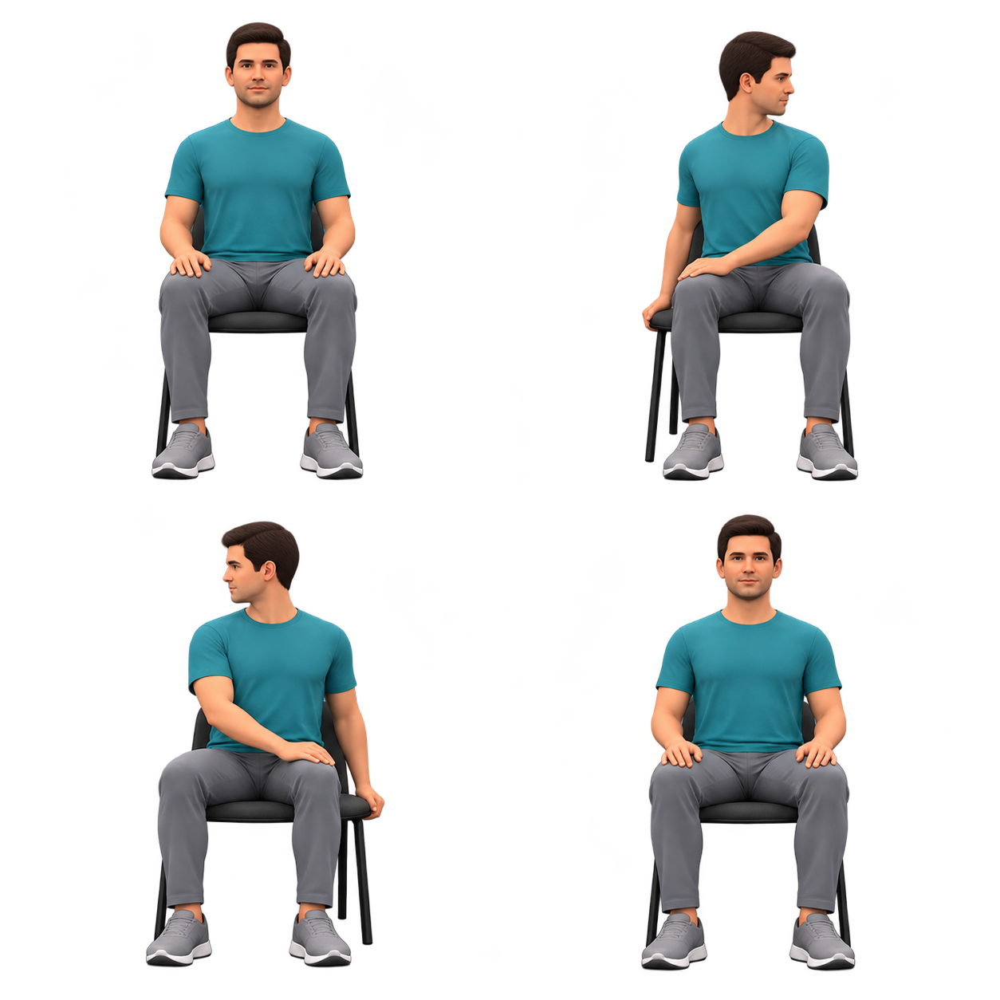

<!doctype html>
<html lang="pt-BR">
<meta charset="utf-8">
<meta name="viewport" content="width=device-width, initial-scale=1">
<title>CoreFlow · Pausas</title>
<link rel="stylesheet" href="../../../../app/src/main/assets/vendor/fontawesome/css/all.min.css">
<style>
  :root {
    color-scheme: light;
    --canvas: #f5f1e7; --surface: #fffefa; --ink: #212821; --muted: #56615a;
    --line: #e3ddd1; --action: #2f5b45; --on-action: #fff;
    --feature: #e6eee7; --feature-ink: #172e21; --feature-muted: #3f5f4c; --figure: #d5e5d8;
  }
  @media (prefers-color-scheme: dark) {
    :root {
      color-scheme: dark;
      --canvas: #090c0a; --surface: #151b16; --ink: #f4f6f1; --muted: #b8c4ba;
      --line: #303a32; --action: #a9d1ab; --on-action: #183321;
      --feature: #152d22; --feature-ink: #f3f8f2; --feature-muted: #c0dbc6; --figure: #254334;
    }
  }
  * { box-sizing: border-box; }
  body { margin: 0; background: var(--canvas); color: var(--ink); font: 1rem/1.4 Roboto, system-ui, sans-serif; }
  main { max-width: 30rem; margin: auto; padding: 1.25rem 1.25rem 2rem; }
  header { font-size: .875rem; color: var(--muted); font-weight: 650; }
  h1 { margin: 1.65rem 0 1rem; font-size: clamp(2rem, 10vw, 2.5rem); line-height: 1.1; letter-spacing: -.035em; }
  h2 { margin: 1.5rem 0 .65rem; font-size: 1.25rem; letter-spacing: -.02em; }
  p { margin: 0; }
  button { color: inherit; font: inherit; border: 0; cursor: pointer; background: transparent; min-height: 48px; }
  button:focus-visible { outline: 2px solid var(--action); outline-offset: -4px; }
  .feature { display: grid; grid-template-columns: minmax(0, 1fr) minmax(90px, 38%); align-items: center; gap: .4rem; padding: 1.25rem; min-height: 12rem; background: var(--feature); color: var(--feature-ink); border-radius: 1.5rem; }
  .feature h2 { margin: 0 0 .35rem; font-size: clamp(1.35rem, 6vw, 1.75rem); }
  .feature p { color: var(--feature-muted); font-size: .875rem; }
  .start { margin-top: 1.4rem; padding: .55rem 1rem; border-radius: .875rem; background: var(--action); color: var(--on-action); font-weight: 650; }
  .pose { display: block; width: 100%; aspect-ratio: 1; position: relative; overflow: hidden; border-radius: 50%; background: var(--figure); }
  .pose img { position: absolute; inset: 0; width: 200%; max-width: none; height: 200%; transform: translateX(-50%); }
  .group { background: var(--surface); border-radius: 1.125rem; overflow: hidden; }
  .row { width: 100%; display: grid; grid-template-columns: 1.35rem minmax(0, 1fr) 1rem; align-items: center; gap: .65rem; padding: .7rem 1rem; text-align: start; }
  .row + .row { border-top: 1px solid var(--line); }
  .row span { display: block; font-weight: 650; }
  .row i { color: var(--action); text-align: center; }
  .row small { display: block; margin-top: .15rem; color: var(--muted); font-size: .8125rem; }
  .row::after { content: '›'; justify-self: end; font-size: 1.4rem; color: var(--muted); }
  .row, .start { transition: background-color 150ms ease, opacity 150ms ease; }
  .row:active { background: var(--feature); }
  .start:active { opacity: .8; }
  dialog { position: fixed; inset: auto 0 0; margin: 0 auto; width: min(100%, 30rem); max-width: none; max-height: 84vh; padding: 1.1rem 1.25rem max(1.5rem, env(safe-area-inset-bottom)); border: 1px solid var(--line); border-radius: 1.5rem 1.5rem 0 0; color: var(--ink); background: var(--surface); }
  dialog[open] { animation: enter 230ms cubic-bezier(.2,.75,.23,1) both; }
  dialog::backdrop { background: rgb(0 0 0 / .36); animation: backdrop-in 180ms ease both; }
  dialog header { display: flex; align-items: center; justify-content: space-between; gap: .75rem; }
  dialog h2 { color: var(--ink); margin: 0; }
  dialog button { padding: 0 .6rem; color: var(--action); font-weight: 650; }
  dialog ul { padding: 0; list-style: none; margin: .6rem 0 0; }
  dialog li { border-top: 1px solid var(--line); padding: .75rem 0; }
  @keyframes enter { from { transform: translateY(20px); opacity: 0; } }
  @keyframes backdrop-in { from { opacity: 0; } }
  @media (prefers-reduced-motion: reduce) { *, *::backdrop { animation: none !important; transition: none !important; } }
</style>
<main>
  <header>CoreFlow</header>
  <h1>Pausas</h1>
  <div class="feature">
    <div><h2>SOS Coluna</h2><p>1 min · Na cadeira</p><button class="start" data-detail="sos">Começar</button></div>
    <span class="pose" aria-hidden="true"></span>
  </div>
  <h2>Práticas</h2>
  <div class="group">
    <button class="row" data-detail="corpo"><i class="fa-solid fa-person" aria-hidden="true"></i><span>Alongamentos<small>Circuito e exercícios por região</small></span></button>
    <button class="row" data-detail="mente"><i class="fa-solid fa-wind" aria-hidden="true"></i><span>Respiração<small>Em caixa, longa, igual e personalizada</small></span></button>
    <button class="row" data-detail="resposta"><i class="fa-regular fa-comment" aria-hidden="true"></i><span>Pausa de Resposta<small>3 min · Sem áudio</small></span></button>
  </div>
  <h2>Sua rotina</h2>
  <div class="group">
    <button class="row" data-detail="rotina"><i class="fa-regular fa-calendar" aria-hidden="true"></i><span>Pausa Consciente</span></button>
    <button class="row" data-detail="historico"><i class="fa-regular fa-clock" aria-hidden="true"></i><span>Histórico de práticas</span></button>
  </div>
</main>
<dialog aria-labelledby="detail-title">
  <header><h2 id="detail-title"></h2><form method="dialog"><button>Fechar</button></form></header>
  <ul></ul>
</dialog>
<script>
  const details = {
    sos: ['SOS Coluna', ['1 min · Torção de coluna na cadeira', 'Prévia da entrada da prática. O exercício abre na versão do app.']],
    corpo: ['Alongamentos', ['Circuito Ergonômico', 'Posição do 4 na cadeira', 'Torção de coluna na cadeira', 'Abertura de peitoral e ombros', 'Alívio cervical e trapézio']],
    mente: ['Respiração', ['Em Caixa', 'Expiração Longa', 'Igual', 'Personalizado']],
    resposta: ['Pausa de Resposta', ['3 min · Sem áudio', 'Reconhecer', 'Ancorar', 'Escolher']],
    rotina: ['Pausa Consciente', ['Dias da semana', 'Horário de início e fim', 'Intervalo entre lembretes']],
    historico: ['Histórico de práticas', ['Alongamentos e mobilidade', 'Práticas de respiração', 'Pausa de Resposta']]
  };
  const dialog = document.querySelector('dialog');
  document.querySelectorAll('[data-detail]').forEach(button => {
    button.addEventListener('click', () => {
      const [title, items] = details[button.dataset.detail];
      dialog.querySelector('h2').textContent = title;
      dialog.querySelector('ul').replaceChildren(...items.map(item => {
        const row = document.createElement('li');
        row.textContent = item;
        return row;
      }));
      dialog.showModal();
    });
  });
</script>
</html>
